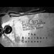

<!DOCTYPE html>
<html lang="en">
 <head>
<!-- Favicon -->
<link rel="shortcut icon" href="../../favicon.ico">
  <meta charset="utf-8"/>
  <title>
   New Breitbart info on investigation and his connection to coroner (Michael Cormier). Evidence was destroyed.
  </title>
  <meta content="Post on /v/Pizzagate archived on 2017-03-10 by Projectastral." name="description"/>
  <meta content="New Breitbart info on investigation and his connection to coroner (Michael Cormier). Evidence was destroyed." property="og:title"/>
  <meta content="Post on /v/Pizzagate archived on 2017-03-10 by Projectastral." property="og:description"/>
  <link href="../../static/css/page.css" rel="stylesheet"/>
  <meta content="https://voat.pizzagate.hackliberty.org/thumbnails/56/4e/564eb381-a488-406e-b57f-6e86b219fd5a.jpg" property="og:image"/>
  <meta content="https://voat.pizzagate.hackliberty.org/v/pizzagate/1708553.html" property="og:url"/>
  <meta content="width=device-width, initial-scale=1" name="viewport"/>
  <link href="https://voat.pizzagate.hackliberty.org/1708553.html" rel="canonical"/>
  <meta content="article" property="og:type"/>
  <meta content="Voat /v/Pizzagate Archive" property="og:site_name"/>
  <meta content="en_US" property="og:locale"/>
  <meta content="summary_large_image" name="twitter:card"/>
  <meta content="New Breitbart info on investigation and his connection to coroner (Michael Cormier). Evidence was destroyed." name="twitter:title"/>
  <meta content="Post on /v/Pizzagate archived on 2017-03-10 by Projectastral." name="twitter:description"/>
  <meta content="https://voat.pizzagate.hackliberty.org/thumbnails/56/4e/564eb381-a488-406e-b57f-6e86b219fd5a.jpg" name="twitter:image"/>
 </head>
</html>
<body class="dark">
 <div id="container">
  <!-- array (
  'submissionid' => 1708553,
  'creationDate' => '2017-03-10 02:25:42',
  'domain' => 'projectastral.net',
  'formattedContent' => NULL,
  'isAdult' => 0,
  'isAnonymized' => 0,
  'subverse' => 'pizzagate',
  'thumbnail' => '564eb381-a488-406e-b57f-6e86b219fd5a.jpg',
  'title' => 'New Breitbart info on investigation and his connection to coroner (Michael Cormier). Evidence was destroyed.',
  'url' => 'https://projectastral.net/2017/01/02/the-breitbart-coroner-michael-cormier-part-i-the-toe-tag/',
  'userName' => 'Projectastral',
  'archivedLink' => NULL,
  'archivedDomain' => NULL,
  'isDeleted' => 0,
) -->
  <div style="text-align:center; font-size:24px; font-weight:bold;">
   <a href="../../index.html" style="text-decoration: none; color: inherit;">
    Voat /v/Pizzagate Archive
   </a>
  </div>
  <div class="content" role="main">
   <div class="sitetable linklisting" id="siteTable">
    <div class="submission id-1708553 link type-text" id="submission-1708553">
     <a name="submissionTop">
     </a>
     <p class="parent">
     </p>
     <a class="thumbnail may-blank" href="https://projectastral.net/2017/01/02/the-breitbart-coroner-michael-cormier-part-i-the-toe-tag/" target="_self">
      
     </a>
     <div class="entry unvoted">
      <p class="title">
       <a class="title may-blank" href="https://projectastral.net/2017/01/02/the-breitbart-coroner-michael-cormier-part-i-the-toe-tag/" tabindex="1" target="_self" title="New Breitbart info on investigation and his connection to coroner (Michael Cormier). Evidence was destroyed.">
        New Breitbart info on investigation and his connection to coroner (Michael Cormier). Evidence was destroyed.
       </a>
       <span class="domain">
        (
        <a href="https://archive.searchvoat.co/search.php?d=projectastral.net">
         projectastral.net
        </a>
        )
       </span>
      </p>
      <p class="tagline">
       submitted
       <time datetime="2017-03-10T02:25:42+00:00" title="03/10/2017 2:25:42 AM">
        2017-03-10T02:25:42
       </time>
       by
       <span class="userattrs">
        <a class="author may-blank" href="https://archive.searchvoat.co/search.php?u=Projectastral">
         Projectastral
        </a>
       </span>
      </p>
      <ul class="flat-list buttons">
       <li class="first">
        <a class="comments may-blank" href="https://archive.searchvoat.co/v/pizzagate/1708553" rel="nofollow">
         4 comments
        </a>
       </li>
      </ul>
     </div>
     <div class="child">
     </div>
     <div class="clearleft">
     </div>
    </div>
    <div class="clearleft">
    </div>
   </div>
   <div class="horizontal-line">
   </div>
   <div class="commentarea">
    <div class="sitetable nestedlisting" id="siteTable">
     <div class="child id-8362748 comment even" style="">
      <div class="entry unvoted">
       <div class="noncollapsed" id="8362748" style=";">
        <p class="tagline">
         <a class="author may-blank" href="https://archive.searchvoat.co/search.php?u=equineluvr">
          equineluvr
         </a>
         <span class="userattrs">
         </span>
         <time datetime="2017-03-10T04:34:05+00:00" title="3/10/2017 4:34:05 AM">
          2017-03-10T04:34:05
         </time>
        </p>
        <div class="usertext-body may-blank-within" id="commentContent-8362748">
         <div class="md">
          <p>
           <p>
            "This arsenic was made in a LABORATORY… but which one?"
           </p>
           <p>
            Fort Detrick might be a good start.
           </p>
           <p>
            <a href="https://en.wikipedia.org/wiki/Fort_Detrick">
             https://en.wikipedia.org/wiki/Fort_Detrick
            </a>
           </p>
          </p>
         </div>
        </div>
        <ul class="flat-list buttons">
         <li class="first">
          <a class="bylink" href="https://archive.searchvoat.co/v/pizzagate/1708553/8362748" rel="nofollow">
           link
          </a>
         </li>
        </ul>
       </div>
      </div>
     </div>
     <div class="child id-8362724 comment even" style="">
      <div class="entry unvoted">
       <div class="noncollapsed" id="8362724" style=";">
        <p class="tagline">
         <a class="author may-blank" href="https://archive.searchvoat.co/search.php?u=rooting4redpillers">
          rooting4redpillers
         </a>
         <span class="userattrs">
         </span>
         <time datetime="2017-03-10T04:32:18+00:00" title="3/10/2017 4:32:18 AM">
          2017-03-10T04:32:18
         </time>
        </p>
        <div class="usertext-body may-blank-within" id="commentContent-8362724">
         <div class="md">
          <p>
           <p>
            Thanks for posting this. Brietbart and Scalia, the two most ridiculously-uninvestigated "deaths" accomplished in my lifetime. Breitbart made this world a better place, and he died for it, as did
            <strong>
             a lot of other less high-profile, decent human beings
            </strong>
            who got
            <strong>
             really
            </strong>
            close.
           </p>
           <p>
            In the last few months, I'm seeing massive amounts of enlightened comments on social media, YouTube, news pages, etc. That, plus the determination and endless energy of you people here, finding the old evidence, the new evidence, and putting it all together. I hear so many of you saying "we won't stop," and I believe it.
           </p>
           <p>
            This gives me great hope, for the future. Good to know that the work of those decent human beings, over decades, didn't do it all for nothing.
           </p>
          </p>
         </div>
        </div>
        <ul class="flat-list buttons">
         <li class="first">
          <a class="bylink" href="https://archive.searchvoat.co/v/pizzagate/1708553/8362724" rel="nofollow">
           link
          </a>
         </li>
        </ul>
       </div>
      </div>
      <div class="child id-8363803 comment odd" style="">
       <div class="entry unvoted">
        <div class="noncollapsed" id="8363803" style=";">
         <p class="tagline">
          <a class="author may-blank" href="https://archive.searchvoat.co/search.php?u=rodeo13">
           rodeo13
          </a>
          <span class="userattrs">
          </span>
          <time datetime="2017-03-10T07:39:49+00:00" title="3/10/2017 7:39:49 AM">
           2017-03-10T07:39:49
          </time>
         </p>
         <div class="usertext-body may-blank-within" id="commentContent-8363803">
          <div class="md">
           <p>
            <p>
             And Michael Hastings.
            </p>
           </p>
          </div>
         </div>
         <ul class="flat-list buttons">
          <li class="first">
           <a class="bylink" href="https://archive.searchvoat.co/v/pizzagate/1708553/8363803" rel="nofollow">
            link
           </a>
          </li>
         </ul>
        </div>
       </div>
      </div>
     </div>
     <div class="child id-8361679 comment even" style="">
      <div class="entry unvoted">
       <div class="noncollapsed" id="8361679" style=";">
        <p class="tagline">
         <a class="author may-blank" href="https://archive.searchvoat.co/search.php?u=PizzagateBot">
          PizzagateBot
         </a>
         <span class="userattrs">
         </span>
         <time datetime="2017-03-10T02:30:04+00:00" title="3/10/2017 2:30:04 AM">
          2017-03-10T02:30:04
         </time>
        </p>
        <div class="usertext-body may-blank-within" id="commentContent-8361679">
         <div class="md">
          <p>
           <p>
            Hi! I used Google to find related Voat posts using the URL(s) in your post and created the following link(s):
           </p>
           <table>
            <thead>
             <tr>
              <th>
               OriginLinkFromCurrentPost
              </th>
              <th>
               RelatedPostTitle
              </th>
             </tr>
            </thead>
            <tbody>
             <tr>
              <td>
               <a href="https://projectastral.net/2017/01/02/the-breitbart-coroner-michael-cormier-part-i-the-toe-tag/">
                projectastral.net/2017/01/02/the-breitbart-coroner-michael-cormier-part-i-the-toe-tag/
               </a>
              </td>
              <td>
               <a href="https://archive.searchvoat.co/v/pizzagate/1536303">
                Repost (Model deleted ) Andrew Brietbart (killed for exposing pizzagate) Autopsy Investigator Murdered 24 Hrs Later
               </a>
              </td>
             </tr>
            </tbody>
           </table>
          </p>
         </div>
        </div>
        <ul class="flat-list buttons">
         <li class="first">
          <a class="bylink" href="https://archive.searchvoat.co/v/pizzagate/1708553/8361679" rel="nofollow">
           link
          </a>
         </li>
        </ul>
       </div>
      </div>
     </div>
    </div>
   </div>
  </div>
 </div>
<!-- Footer Section -->
<footer class="container-fluid mt-3">
  <p class="small mb-0">
    /v/pizzagate archive has 40446 posts and 683312 total comments.
    <a href="https://git.hackliberty.org/c0mmando/voat-pizzagate-archive/">source code</a>.
  </p>
</footer>

<script src="../../static/js/jquery-3.7.1.slim.min.js"></script>
<script src="../../static/js/comments-toggle.js"></script>

</body>
